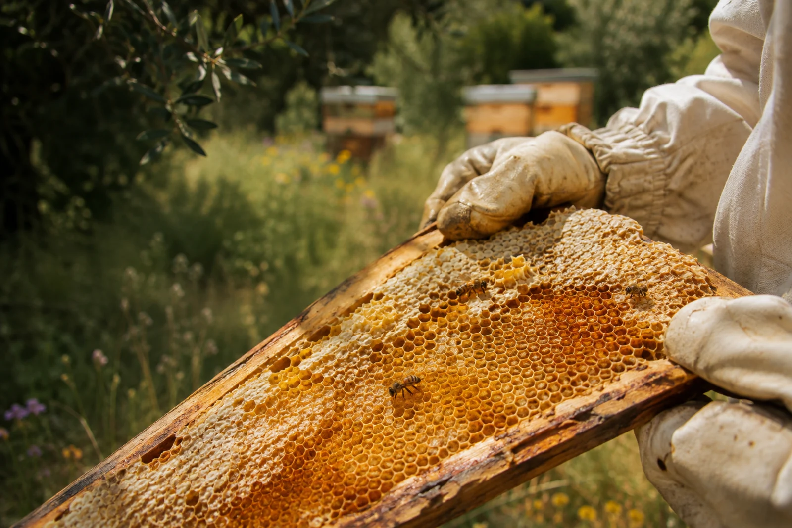

Tout commence
par une fleur.
Du rucher à votre table Le miel raconte les fleurs butinées et la saison qui les a vues éclore. D’une récolte à l’autre, sa couleur, sa texture et ses arômes changent.
Au rucher, on prend le temps d’observer.
Sur votre table, il ne reste qu’à savourer.À découvrir près de chez vous.